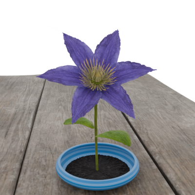
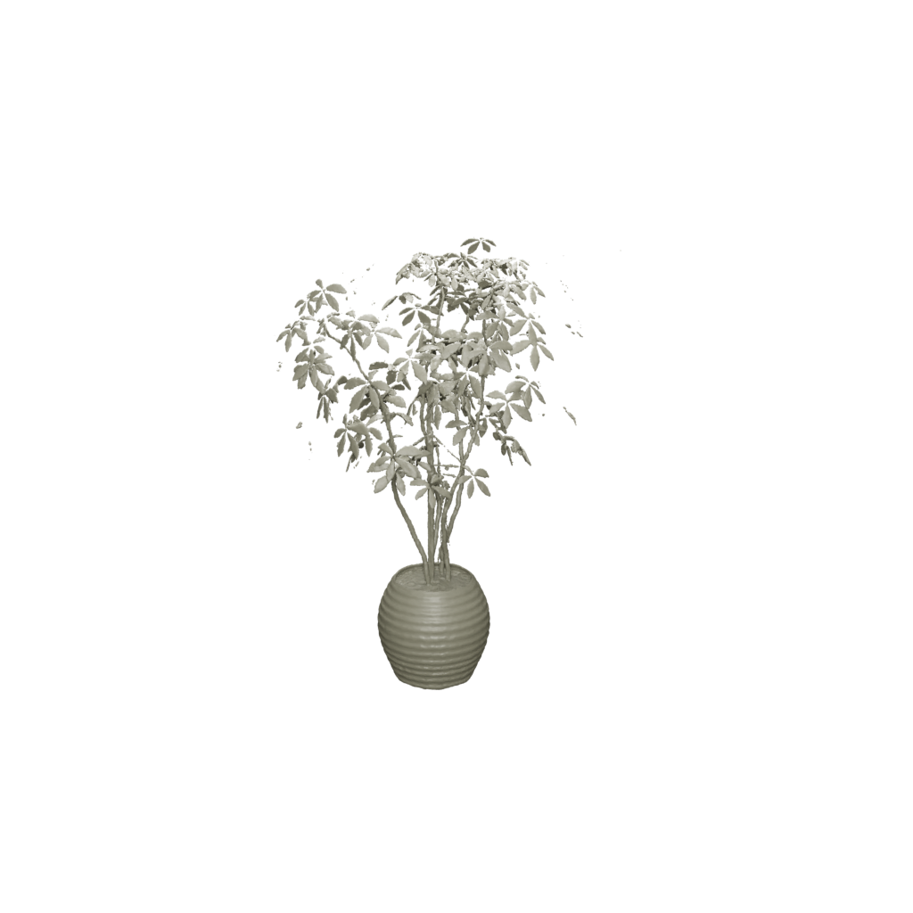

|
Weihan Luo I studied math & CS at the University of Toronto. During my undergrad, I have worked with Prof David Lindell on lidar-supervised NeRF. Email: weihan dot luo at mail dot utoronto dot ca Alternate email: weihan262144 at outlook dot com |

|
Research
I work on 3D vision. |
|

|
Grow with the Flow: 4D Reconstruction of Growing Plants with Gaussian Flow Fields
Weihan Luo, Lily Goli, Sherwin Bahmani, Felix Taubner, Andrea Tagliasacchi, David B. Lindell arxiv, 2026 project page Reconstructing 4D plants using neural ODEs. |
|

|
Transientangelo: Few-Viewpoint Surface Reconstruction Using Single-Photon Lidar
Weihan Luo, Anagh Malik, David B. Lindell WACV, 2025 project page / arXiv / code Few-viewpoint surface reconstruction method using lidar supervision. |
|
Template from Jon Barron . |